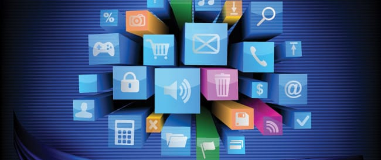
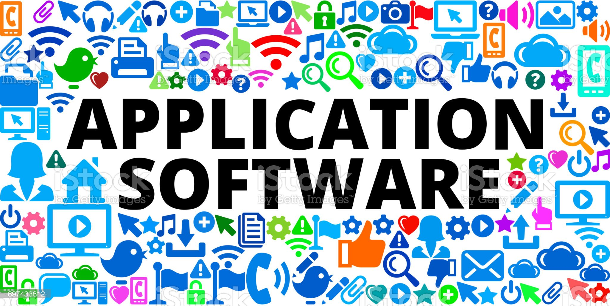
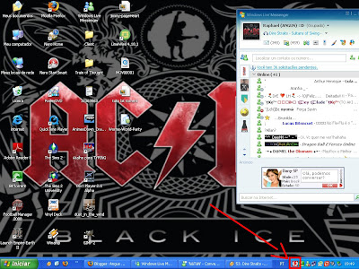
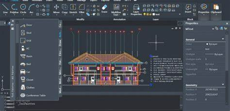

- software de sistema
- sotware de aplicação
- software de programação
- software de segurança
- software de bases de dados
- software de redes
- software de educacional
- software de entretenimento
- software de gestão empresarial
- software de design assistido por computador (CAD)
O que é um software?
Software é uma sequência de instruções escritas para serem interpretadas por um computador para executar tarefas específicas. Também pode ser definido como os programas, dados e instruções que comandam o funcionamento de um computador, smartphone, tablet e outros dispositivos eletrônicos.
software de sistema
Software de sistema ou programa de sistema é o software projetado para fornecer uma plataforma para outro software. Exemplos de software de sistema incluem sistemas operacionais como macOS, Ubuntu (uma distribuição Linux) e Microsoft Windows, software de computação científica, mecanismos de jogos, automação industrial e aplicativos de software como ...
windows,Androide,iOS.

sotware de aplicação
O software de aplicação é criado, em regra, para executar tarefas específicas tal como o processamento de texto, reprodução de áudio. Ao contrário do software de sistema, estas tarefas não são indispensáveis ao normal funcionamento do computador e que só são executa- das a pedido do utilizador.
Microsoft Word, Spotify, Calculadora, Instagram, TikTok.
software de programação
Softwares de programação são softwares que permitem que programadores criem outros programas, através do uso de linguagens de programação. Eles fornecem ferramentas e soluções para testar, compartilhar, gerenciar e até de facilitar a escrita dos códigos.
Chrome, calculadora, Windows Media Player, Microsoft Word, AutoCAD, Adobe Photoshop.
software de segurança
Software de segurança ou VMS (Sigla em inglês para Video Management System) é uma solução de vídeo monitoramento profissional formada por servidores e softwares para gravação e gerenciamento de vídeo. Essas soluções de vídeo-segurança são baseadas no padrão IP e estão diretamente relacionadas à área de sistemas CFTV (circuito fechado de TV). O termo VMS define softwares de segurança que fazem a gravação e o gerenciamento de câmeras de segurança e esse tipo de solução é largamente utilizada em empresas e sistemas de monitoramento que envolvem centenas de câmeras IP de quaisquer modelos: bullets, dome , speed dome.
Kaspersky: o software de segurança da informação. ... Firewall. ... Softwares de monitoramento. ... Sistemas de controle de acesso. ... Protocolos de segurança e criptografia.

software de redes
Definição - O que significa Software de Rede? Software de rede é um termo extremamente amplo para uma gama de softwares voltados ao design e implementação de redes modernas. Vários tipos de software de rede suportam a criação, calibração e operação de redes.
switches; roteadores; concentradores; repetidores; adaptadores de rede; modem; gateway; bridge; firewall; pontos de acesso sem fio, e outros hardwares relacionados
software de educacional
O software educacional é uma solução completa para instituições de ensino de todos os portes e segmentos. Trata-se de um sistema que oferece controle total sobre as atividades da instituição e de seus colaboradores.
Software educativo de sistema tutorial; Software educativo de exercício e prática; Software educativo de simuladores e jogos e Software educativo de sistema experto.
software de entretenimento
Software de entretenimento é qualquer software que apóie um hobby ou forneça uma forma de diversão. O software de entretenimento inclui videogames, vídeos e qualquer outro software que o usuário considere agradável. De acordo com a University of West Florida, software de entretenimento é uma forma de software aplicativo ou software projetado para realizar tarefas específicas para um usuário. Devido à definição vaga de software de entretenimento ser qualquer forma de software que forneça entretenimento ao usuário, há vários softwares que podem se enquadrar nessa categoria.
The Sims; Candy Crush; League of Legends.
software de gestão empresarial
O software de gestão empresarial também é conhecido como ERP, sigla para Enterprise Resource Planning, em português “sistema integrado de gestão empresarial”. A ferramenta pode ser implementada em todos os setores de uma empresa e otimizar processos para tornar a rotina de trabalho mais eficiente. Isso se deve ao fato de que um software empresarial tem recursos de gestão que permitem centralizar todas as informações, organizá-las com mais facilidade e automatizar etapas que demandam muito tempo dos colaboradores e da empresa.
gestão financeira; performance corporativa; gestão de projetos; relacionamento com o cliente.
software de design assistido por computador (CAD)
O software CAD cria desenhos 2D e modelos 3D detalhados. O CAD é usado ao longo de todo o processo de engenharia, desde o layout, o projeto de produto conceitual e a análise da montagem à definição do método de manufatura.
AutoCAD. É utilizado principalmente para a elaboração de peças de desenho técnico em duas dimensões e para criação de modelos tridimensionais. ... Inventor CAM. ... SketchUp. ... SolidWorks. ... 3DS Max. ... Maya. ... Revit. ... Civil 3D
Windows 1.0
A história começa antes dele, no MS-DOS. Em 1981, a Microsoft iniciou o desenvolvimento de um software de interface gráfica, que posteriormente veio a se tornar o Windows. Quando finalmente lançado, em 20 de novembro de 1985, o Windows 1.0 era apenas um software de interface bidimensional para facilitar o uso do sistema operacional de computadores IBM da época.

Windows 2.0
A maior atualização do software, o Windows 2.0, chegou em 1987 e seguia a mesma proposta de ser um complemento com interface gráfica para o MS-DOS. A maior novidade? Sobreposição de janelas, recurso indisponível na versão anterior.

Windows 3.x
Sucessor do Windows 2.0, que trouxe poucas alterações em relação ao primeiro, o 3.0 foi lançado em 1990 com melhorias de memória. Ele também se destacou pelo visual mais limpo, melhor organização de arquivos e apresentou ao mundo o Campo Minado, que viria a ser um destaque nos computadores pré-internet.

Windows 95
Considerado um dos sistemas operacionais mais importantes da história, o Windows 95 abriu uma nova era para a Microsoft. Ele foi programado em 32 bits e trouxe melhorias que incluíam o sistema plug and play, recursos de acessibilidade e o navegador Internet Explorer. Lançado em agosto de 1995, o sistema foi o primeiro com o menu Iniciar, que permanece até hoje, e foi o responsável por ajudar o computador a se tornar um item popular nas casas das famílias do mundo todo.

Windows 98
O Windows 98 aprofundou a revolução que o seu antecessor começou. Disponibilizado em junho de 1998, ele era mais estável, tinha suporte a mais de um monitor e componentes USB, particionamento do HD, serviço Outlook de e-mail, modo de hibernação e mais. No mundo todo, ele foi o primeiro contato de muita gente com o PC, já que ainda estava em muitas máquinas mesmo após a virada do século.

Windows ME
O Windows 2000 foi lançado em fevereiro de 2000 e consolidou o fim definitivo da nomenclatura "NT". O Windows NT, que começou a ser disponibilizado em 1993, era voltado para usuários corporativos, servidores e workstation, e não para o público geral. Por causa disso, sua menção é importante, além de ter trazido recursos importantes e novos sistemas de segurança.

Windows XP
O Windows XP foi lançado em outubro de 2001 e à época era bastante inovador, principalmente no quesito visual. Ele apostou em um menu Iniciar verde e barras azuis que se tornaram bastante populares entre os usuários. Entre as várias novidades que ele apresentou em suas versões, havia a opção de alternância de contas de usuários sem fechar arquivos abertos, suporte para DSL e wireless. Ele popularizou programas do Windows Media Player, já que CDs poderiam ser lidos pelos drives e tocados no programa. Seu wallpaper, uma fotografia de planícies na Califórnia, tornou-se uma das imagens mais famosas da era da internet.

Windows Vista
O Windows Vista teve um hiato bastante grande em relação ao anterior, se desconsiderarmos as atualizações e novas versões do XP. Ele foi lançado em novembro de 2006, apresentando uma nova estética de janelas transparentes e melhores recursos de segurança. Apesar disso, ele não foi tão bem recepcionado porque muitos usuários reclamavam que ele deixava o computador lento, o que fez muita gente continuar usando o XP por mais um bom tempo.

Windows 7
Lançado em julho de 2009, o Windows 7 foi recepcionado de maneira um pouco melhor na comparação com o Vista e melhorou tanto o esquema visual quanto o desempenho do sistema operacional. Ele também se destacou por apresentar recursos como suporte a telas touch screen e multi-touch, leitura de Blu-ray, Windows Defender, modo Windows XP e mais.

Windows 8
Apesar de também não ter sido muito popular, o Windows 8 trouxe mudanças que podem ser vistas até hoje no software da Microsoft. Ele foi lançado em outubro de 2012 e remodelou por completo a interface do sistema operacional, trazendo um novo sistema de widgets, janelas retangulares e a remoção do clássico menu iniciar, que foi bastante polêmica.

Windows 8.1
O Windows 8.1 é a primeira grande atualização do Windows 8 e traz diversas mudanças que, em alguns aspectos – principalmente nas opções de personalização –, se aproximam da versão desktop do Windows Phone. Com a possível unificação das lojas de ambos os sistemas, esta tendência aumentará. Mas isso é só o começo, não perca tempo para baixar o Windows 8.1 e conhecer as novidades desta atualização.
Windows 10
O software mais recente da Microsoft foi lançado em julho de 2015. Ele trouxe de volta o menu Iniciar e tem como um dos principais diferenciais o foco multimídia, que pode ser visto na integração com o Xbox, notebooks e tablets. Outra grande novidade que ele apresentou foi a assistente virtual Cortana.

Windows 11
Nesta quinta-feira (24), a Microsoft apresentou o futuro do seu produto mais popular. Apesar de ter sido anunciado hoje, ele será lançado no final de 2021 e chegará em uma atualização gratuita para quem tiver a versão anterior. O sistema operacional terá várias novidades, incluindo um visual mais moderno, mais segurança e velocidade, bem como um novo método de organização de janelas. Além disso, pela primeira vez na história, aplicativos Android estarão presentes na Microsoft Store, o que marcará o início de uma nova era de integração entre ecossistemas de apps.

Linux Mint
Linux Mint é uma distribuição Linux criada a partir de uma comunidade baseada no Ubuntu. É amada por pessoas usuárias casuais e profissionais na área da tecnologia. Mesmo abandonado o suporte a versão 20 do Snap, o Mint ainda é bem popular.

Linux Ubuntu
Desenvolvido por uma empresa chamada Canonical, o Ubuntu é baseado em um dos muitos derivados do Linux Debian. Esse software chegou ao mercado em 2004. As pessoas programadoras na época perceberam os destaques do sistema e sua facilidade na programação. A interface de linha de comando permitia que fosse usada uma sintaxe mínima para escrever programas. O Ubuntu tem três versões, todas desenvolvidas para diferentes propósitos.

Linux Deepin
Deepin é uma distribuição baseada em Debian (era baseada em Ubuntu até a versão 15 lançada no final de 2015) que tem como objetivo fornecer uma interface elegante, confiável e amigável.

Kali Linux
Offensive Security é a empresa responsável pelo Kali Linux. Ele por si só é uma distro Linux baseada em Debian. Foi projetado para ajudar principalmente profissionais da área de segurança com seus inúmeros testes.

Manjaro Linux
Manjaro Linux é um sistema operacional rápido, amigável e voltado para desktop baseado no Arch Linux.

Linux Debian
Debian é a distribuição mais antiga e mais popular do Linux. Como qualquer outro distro de peso, fornece uma ambientação muito agradável e rápida. Atualmente, sua última versão é a 11, que também é chamada de Bullseye.

Puppy Linux
Puppy Linux é mais uma distribuição Linux. A diferença aqui é que o Puppy é extraordinariamente pequeno, mas cheio de recursos. O Puppy inicializa em um ramdisk e, ao contrário das distribuições de live CD que tem que extrair coisas do CD, ele carrega na RAM. Isso significa que todos os aplicativos começam em um piscar de olhos e respondem à entrada instantaneamente.

Linux OpenSUSE
O OpenSUSE é mais uma das distribuições Linux que tem como objetivo fornecer uma interface moderna e rápida para pessoas usuárias de desktop e desenvolvedoras de todo mundo.

Linux Lite
Linux Lite é uma distribuição Linux amigável para iniciantes baseada no lançamento de suporte de longo prazo (LTS) do Ubuntu e utilizando o desktop XFCE.

MX Linux
MX Linux é uma distribuição Linux feita para desktop baseada na branch “Stable” do Debian e é um empreendimento cooperativo entre o antiX e as antigas comunidades MEPIS Linux.

Linux CentOS
O Linux CentOS é mais um sistema operacional gratuito que tem como objetivo criar um ecossistema de código aberto confiável. Ele é baseado no RHEL, e é uma das alternativas do Red Hat Enterprise Linux por ser gratuito.

Arch Linux
O Linux CentOS é mais um sistema operacional gratuito que tem como objetivo criar um ecossistema de código aberto confiável. Ele é baseado no RHEL, e é uma das alternativas do Red Hat Enterprise Linux por ser gratuito.

Linux Zorin OS
Zorin OS é uma distribuição Linux baseada no Ubuntu projetada especialmente para iniciantes no Linux. Possui uma interface gráfica de usuário semelhante ao Windows e muitos programas semelhantes aos encontrados no Windows.

Linux Slackware
O lançamento oficial do Slackware Linux foi feito por Patrick Volkerding e é um sistema operacional Linux avançado. Foi projetado com o objetivo de ser um sistema fácil de usar e é principalmente estável.

Oracle Linux
O Oracle Linux é uma distribuição Linux para a classe empresarial e é suportada pela Oracle que a constrói a partir dos pacotes do Red Hat Enterprise Linux (RHEL).

Elementary OS
Elementary OS é uma distribuição de desktop baseada no Ubuntu.

Linux Fedora
Fedora dentre as distribuições linux é a que mais se destaca por ser realmente simples e prover uma grande quantidade de aplicativos previamente instalados. Isso a torna uma distribuição muito amigável e que facilita a entrada de novas pessoas usuárias. É flexível e poderoso, baseado no Red Hat, também é utilizado como ambiente de teste da transição do Red Hat. Foi feito tanto para sistemas de desktop, servidores e ecossistemas IoT. É utilizado principalmente para fins de desenvolvimento e muito útil para pessoas desenvolvedoras e estudantes.

Tails Linux
The Amnesic Incognito Live System (Tails) é uma distro baseada em Debian com o objetivo de fornecer anonimato completo na Internet.

Linux Raspbian
Raspberry Pi OS (anteriormente Raspbian) é um sistema operacional gratuito baseado no Debian e otimizado para o hardware do Raspberry Pi (a arquitetura do processador ARMHF).

Linux Pop!_OS
Pop! _OS é uma distribuição Linux baseada no Ubuntu que utiliza o GNOME como sua área de trabalho personalizada.